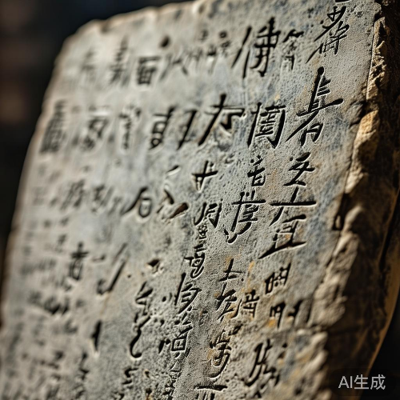

核心功能
碑说平台通过AI技术，为您提供全方位的碑文解读体验
碑文识别
拍摄或上传碑文图片，AI自动识别并转化为现代汉字，支持多朝代字体识别。
- 支持拍照与图片上传
- 多朝代字体智能识别
- 高清图片处理
人工校对
对识别结果进行逐字校对，确保内容准确性，支持手动修改与标注。
- 逐字校对功能
- 手动修改与标注
- 修改历史记录
AI阐释
多维度解读碑文内容，包括历史背景、文化意义、相关人物与事件等。
- 历史背景分析
- 文化意义阐释
- 相关人物事件解读
AI对话
与AI进行深度对话，提出问题或继续探讨相关历史，拓展知识边界。
- 智能问答系统
- 上下文理解
- 知识拓展推荐
历史记录
自动保存所有识别结果，方便随时查看与管理历史记录，支持分类整理。
- 完整历史记录
- 分类与标签
- 快速搜索功能
兴趣推荐
基于您的使用习惯，智能推荐相关碑文与文化主题，拓展历史视野。
- 个性化推荐
- 文化主题探索
- 相关碑文推荐
简单四步，探索历史
轻松使用碑说平台，开启您的历史文化探索之旅
拍摄或上传
拍摄碑文照片或从相册上传图片，支持多种格式
AI识别
系统自动识别碑文内容，转化为现代汉字文本
校对修正
对识别结果进行人工校对，确保内容准确无误
阅读阐释
查看AI对碑文的多维度阐释，与AI对话深入了解
AI识别演示
体验碑说AI的强大识别能力，见证历史文字的数字化重生
碑文原图

识别结果
维大唐开元二十有九年，岁次辛巳，秋八月丁丑朔，十三日己丑。故朝散大夫、守秘书少监、集贤院学士、上柱国、赐紫金鱼袋、赠秘书监、江夏李公，字太白，葬于当涂青山之阳。
公之生也，先天地而生；公之没也，后天地而没。其为文也，拔地倚天，陵轹万古；其为志也，怀瑾握瑜，含英咀华。
公性倜傥，好神仙，喜纵横，击剑为任侠，轻财好施。常欲济苍生，安社稷，然遭逢乱世，有志不伸。乃浪迹江湖，浮游四方，与名流贤士，诗酒唱和。
公之诗，雄奇豪放，清新飘逸，名动天下，传于后世。其代表作有《将进酒》、《望庐山瀑布》、《蜀道难》等，皆为千古绝唱。
AI深度阐释
不仅仅是文字识别，更能深入解读碑文背后的历史文化内涵
李白墓碑文历史背景分析
李白墓碑文撰写于大唐开元二十九年（公元741年），正值盛唐时期，这是中国历史上政治稳定、经济繁荣、文化昌盛的黄金时代。
开元年间，唐玄宗李隆基励精图治，任用贤能，开创了"开元盛世"。这一时期，文化艺术得到极大发展，诗歌创作达到顶峰，出现了李白、杜甫、王维等一大批杰出诗人。
李白（701年－762年），字太白，号青莲居士，是唐代最伟大的浪漫主义诗人之一，被后人誉为"诗仙"。他的一生历经坎坷，曾供奉翰林，后因得罪权贵而离开长安，开始漫游四方。安史之乱爆发后，他因参与永王李璘幕府而被流放夜郎，途中遇赦。晚年漂泊东南一带，最终病逝于当涂（今属安徽）。
此碑文撰写于李白去世前一年，反映了当时文人对李白文学成就的高度评价，也体现了盛唐时期文人的精神风貌和价值取向。
对这段历史背景有疑问？我可以为您解答更多细节
相关时间线
李白出生于碎叶城（今吉尔吉斯斯坦托克马克附近）
李白开始漫游天下，离开蜀地
李白被召入长安，供奉翰林
李白病逝于当涂，享年62岁


探索更多碑文
基于您的兴趣，发现更多精彩的历史碑文与文化遗产